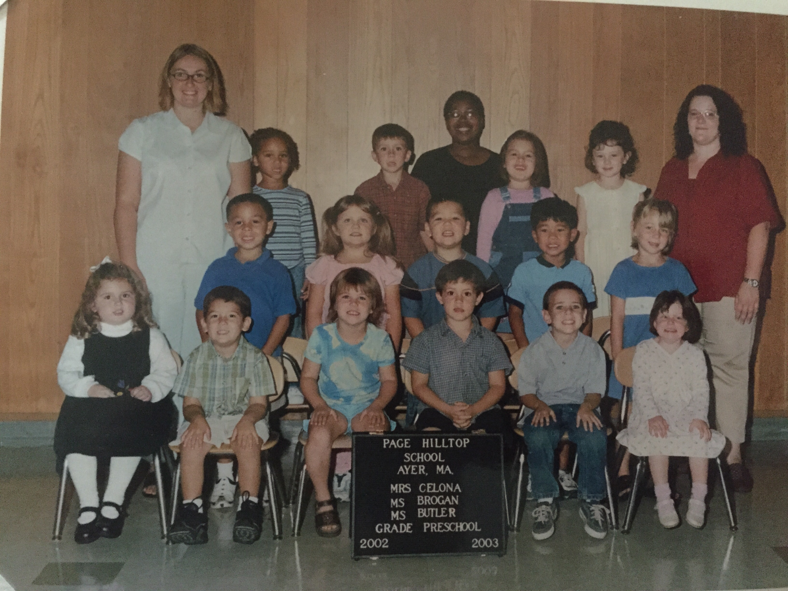
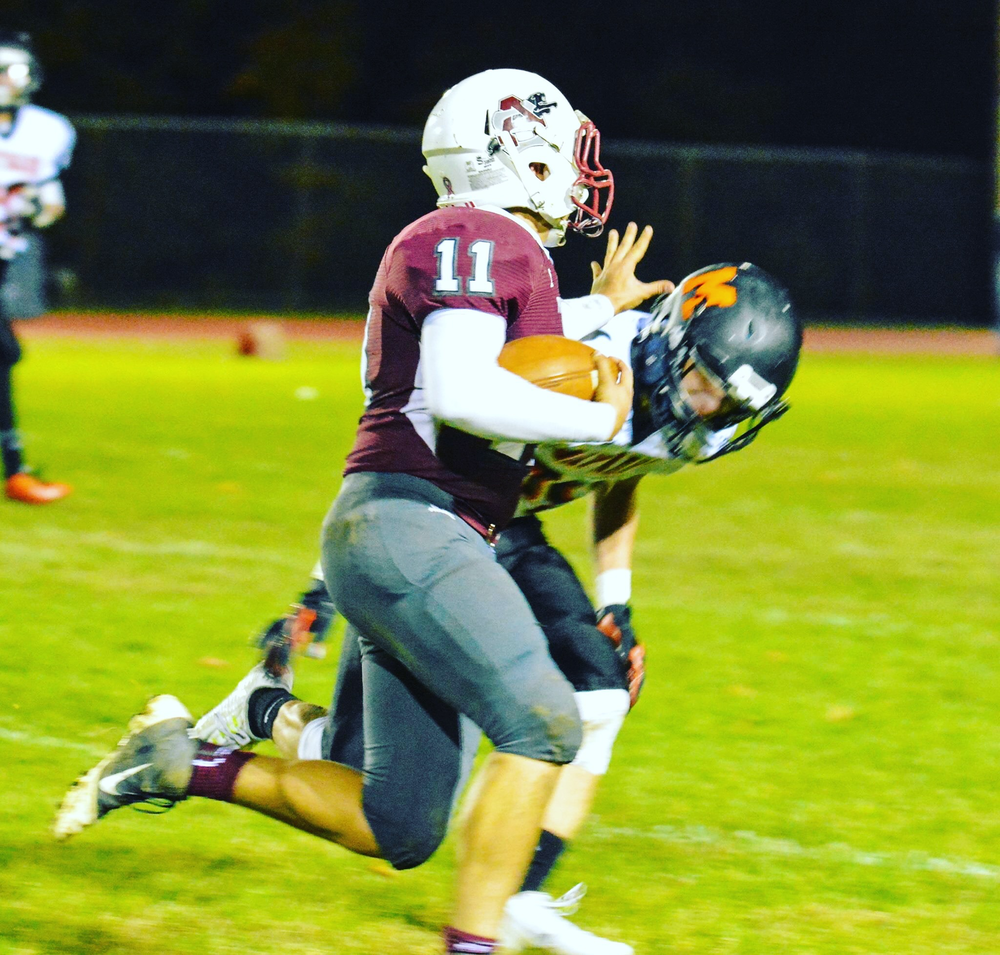
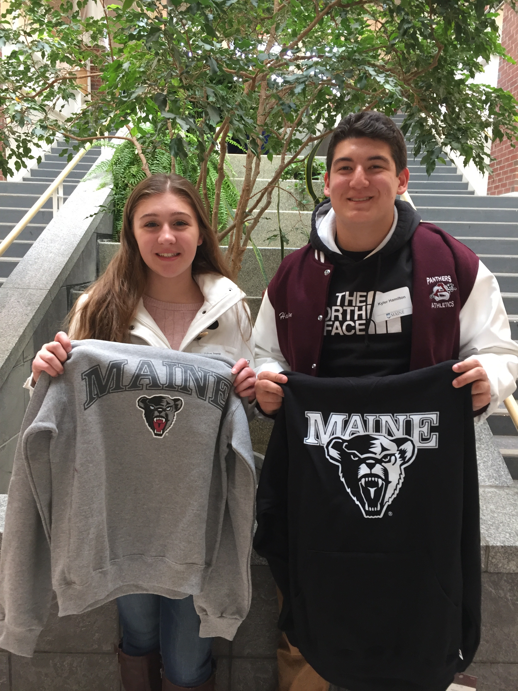

LIFE BEFORE COLLEGE
I started preschool when I was three or four. I was always a good student, from preschool to senior year of highschool. I averaged honor roll, with an occasional C here and there. All of my teachers growing up would tell my parents how well I worked in class... However I was known to talk a lot. Growing up my favorite subject was math, but growing up it had gradually changed to history.

Ever since I was little, sports have been a huge part of my life. At as young as four years old, I have been playing sports. I started out playing Soccer, basketball, and T-Ball. As I went to middle school, I transitioned from Soccer to Football, stopped playing basketball, and switched from baseball to track and field. In highschool I excelled in football, achieving 3 year of varsity, and my senior year achieving Divisional All-Star and playing in the Central Massachusetts All-Star game. when the spring of senior year came around, I qualified for the State-Wide Track and Field meet for javelin. My dad was my biggest fan and inspiration, as he coached me in football and baseball before highschool.

Before coming to the University of Maine, I applied to 5 other schools as well; The University of Rhode Island, UMass Dartmouth, Coastal Carolina University, Merrimack College, and Westfield State University. When choosing where to attend, I wanted to go out of state, but could not afford it. That is, until I found out that UMaine was allowing in-state tuition to Massachusetts residents. That greatly impacted my decision. Whether my major was offered had not really mattered because I was undeclared when deciding. Since then, I have declared into Business, with a focus in Marketing.
